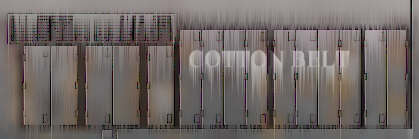

|
This is an advanced tutorial on the art of texturing trains. The tutorial is not intended as a step by step guide, rather it serves to introduce different techniques and tools that are available to the "electronic" artist. For this tutorial, we will take the right rear panels of a "Cotton Belt" GP 35 as an example. The subject, in the grand tradition of anything operated for long by Southern Pacific or its affliates, will represent a well weathered unit. Do note that due to the way that the game lighting works and the fact that any texture that goes through the MakeAce conversion process will lose quality in terms of tone, sharpeness and saturation, I do tend to compensate on the original texture maps. So on the original texture maps the colors used are deliberated more saturated in order to allow them to appear richer when finally transferred into the simulator. One final note, these techniques are some that I personally use. There are other excellent texture artists that will do things differently. There is no right way or wrong way to render a train texture so do not be afraid to experiment. Micrografx Picture Publisher 8 was used to render all of the images in this tutorial - similar tools are available in all advance graphics packages like Photoshop. |
|
Start with a black and white rendition of the area to be painted. Make a copy of the black outlines and save this to a seperate layer or file for re-use later. |
|
Sampling colors from a photograph of the prototype, a graduated fill is used to paint the principle surfaces. |
|
A cloud filter is applied to a copy of the area. |
|
The cloud filter layer is overlayed over the original tex map. To allow the underlying features to show through, the cloud layer is set at about 85% transparent. The end result imitates fairly well an unwashed painted surface. |
|
Using gradients and air brushing tools, highlighting is added as are rust stains and other surface blemishes. A rather heavy touch was used on the example as it is intended that the final surface be well weathered. |
|
A gaugassian blur is applied to the entire surface to blend everything in. Notice that the black outlines are blurred also. This is done to help establish the foundation for shadow effects further into the process. |
|
The previously saved black outlines are reinstated into the texture as a slightly translucent layer. Primary highlight using a translucent white (70% transparent) is added. The main lettering is applied also - like the highlights, the lettering is fixed as a translucent layer to allow the underlying surface treatments to blend through. This is done to help the text sit properly on the surface. |
|
Heavy shadows and stains are added next. These are done by isolating individual elements on to seperate layers and applying a shadow tool effect to these parts. Once again in this example, there is certain level of heavy handedness, this time primarily to illustrate the technique. |
|

Next a copy of the entire area is treated to a wind / motion filter to begin the process of "streaking" to simulate rain runoff on a dirty surface. |
|
The treated layer is then blended as a translucent layer back on to the original surface. |
|
Finally fine details are added together with additional highlights. Certain panels have had their hues or tones changed to create some visual differences, helping suggest the use of replacement panels. Other "proto-typical" details can be added to any texture to help enforce an illusion of reality. |
Copyrights © 2004-2007, Sean Lim. All Rights Reserved. Hosted courtesy of steam4me with permission.